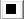
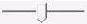
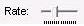

After a topology is resolved, it is queued on the Media Session for playback. TopoEdit provides transport control for changing the state of topology on the Media Session.
The following table shows the menu/toolbar command and the equivalent Media Foundation method for each operation.
| Menu/Toolbar Command | Media Foundation Method |
|---|---|
| On the Controls menu, click Play.[newline] -or-[newline] click the play button on the toolbar (shown in the following image).[newline] | IMFMediaSession::Start |
| On the Controls menu, click Stop.[newline] -or-[newline] click the stop button on the toolbar (shown in the following image).[newline] | IMFMediaSession::Stop |
| On the Controls menu, click Pause.[newline] -or-[newline] click the pause button on the toolbar (shown in the following image).[newline] | IMFMediaSession::Pause |
Â
For information about controlling the playback programmatically by using Media Foundation APIs, see How to Control Presentation States.
If the topology is seekable, you can seek by using the seek bar (shown in the following image) to specify a place in the topology's timeline to begin playback.

[!Note]
If the media source is seekable, the Stop command also seeks the topology back to the start of the stream.
Â
If the underlying media source for the topology supports multiple playback rates, you can use the rate bar to change the playback rate. To fast-forward a topology on the Media Session, increase the rate by dragging the slider to the right, as shown in the following image.

[!Note]
In this version, TopoEdit only supports positive rates. Reverse playback is not supported.
Â
For information about changing the playback rate programmatically by using Media Foundation APIs, see About Rate Control.
Â
Â